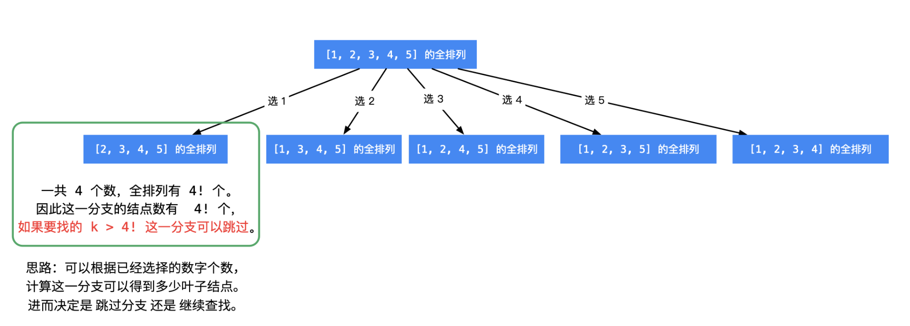

leetcode 60 第k个排列
题目描述
给出集合 [1,2,3,…,n]，其所有元素共有 n! 种排列。
按大小顺序列出所有排列情况，并一一标记，当 n = 3 时, 所有排列如下：
"123"
"132"
"213"
"231"
"312"
"321"
给定 n 和 k，返回第 k 个排列。
说明：
- 给定 n 的范围是 [1, 9]。
- 给定 k 的范围是[1, n!]。
1
2
3
4
5
6
7
8
9
| 示例 1:
输入: n = 3, k = 3
输出: "213"
示例 2:
输入: n = 4, k = 9
输出: "2314"
|
解题思路

所求排列 一定在叶子结点处得到，进入每一个分支，可以根据已经选定的数的个数，进而计算还未选定的数的个数，然后计算阶乘，就知道这一个分支的 叶子结点 的个数：
- 如果 k 大于这一个分支将要产生的叶子结点数，直接跳过这个分支，这个操作叫「剪枝」；
- 如果 k 小于等于这一个分支将要产生的叶子结点数，那说明所求的全排列一定在这一个分支将要产生的叶子结点里，需要递归求解。
1
2
3
4
5
6
7
8
9
10
11
12
13
14
15
16
17
18
19
20
21
22
23
24
25
26
27
28
29
30
31
32
33
34
35
36
37
38
39
40
41
42
43
44
45
46
| class Solution {
public:
string getPermutation(int n, int k) {
vector<bool> isUsed(n + 1, false);
string res = "";
dfs(isUsed, res, n, k);
return res;
}
void dfs(vector<bool> &isUsed, string &res, int n, int k){
int res_len = res.size();
if(res_len == n){
return;
}
int remain_fac = factorial(n - res_len - 1);
for(int i = 1; i <= n; ++i){
if(isUsed[i]){
continue;
}
if(remain_fac > 0 && remain_fac < k){
k -= remain_fac;
continue;
}
res = res + static_cast<char>('0' + i);
isUsed[i] = true;
dfs(isUsed, res, n, k);
}
}
int factorial(int n){
int res = 1;
while(n > 0){
res *= n;
n--;
}
return res;
}
};
|
复杂度分析：
- 时间复杂度：递归n次，每次递归操作里有n次的循环，故为$O(n^2)$
- 空间复杂度：递归栈n，状态数组n，$O(n)$